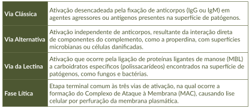

O complemento como um todo compreende nove subunidades, a saber: C1, C2, C3, e assim por diante, até C9. O complemento pode ser ativado por três vias: a clássica, a alternativa e a da lectina. Veja o Quadro 2.
Quadro 2. Vias de ativação do complemento

Fonte: MSD MANUAL. Sistema complemento. Disponível em: https://www.msdmanuals.com/pt/profissional/imunologia-dist%C3%BArbios-al%C3%A9rgicos/biologia-do-sistema-imunit%C3%A1rio/sistema-complemento.